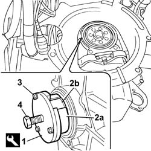
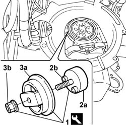
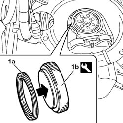
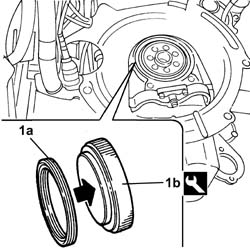

1020D40 FLYWHEEL END OIL SEAL- R+R WITH FLYWHEEL REMOVED
- Path
- Procedures > 10 ENGINE UNIT > 1020 CRANKCASE SUMP AND COVERS > 1020D OIL SEALS ON CRANK SHAFT > 1020D40 FLYWHEEL END OIL SEAL- R+R WITH FLYWHEEL REMOVED
- Kind
- repair procedure (removal / refitting; the operation number is the code)
- Applies to
- engines: 2.0 16V, 2.0 JTD 8V, 2.3 JTD 16V; all production periods
- Interactive page
- https://sloeber94.github.io/elrnDB-fDct/en/#/244000664
Applies to: engines: 2.3 JTD 16V; all production periods
 Removing
Removing
 Refitting
Refitting1. Use the tool described below to fit the oil sealing ring.
2. Position the tool extraction pincers (2a) into oil sealing ring grooves (2b).
3. Secure the extraction pincers in position using retaining bolts.
4. Tighten the tool pin to remove the oil sealing ring from its seat.
 | Description | Code | Function |
|---|---|---|---|
1 | Extractor | 99340058 | Front cover gasket removal |

Applies to: engines: 2.3 JTD 16V; all production periods
Refitting
Removing1. Use the tool described below to fit the oil sealing ring.
2. Apply plate (2a) to the crankshaft and secure using retaining bolts (2b).
- Position the new oil sealing ring in its seat
3. Position fitting tool (3) in contact with the oil sealing ring and tighten into nut (3b) to fully fit the oil seal into its seat on the crankshaft.
| Description | Code | Function |
|---|---|---|---|
1 | Fitting tool | 99346255 | Flywheel end crankshaft seal fitting |

Applies to: engines: 2.0 16V; all production periods
Removing
Refitting- Release the oil seal from the housing taking care not to scratch it.
Applies to: engines: 2.0 16V; all production periods
Refitting
Removing1. Replace the oil seal (1a) in the housing using the special fitting tool (1b).
| Description | Code | Function |
|---|---|---|---|
1b | Fitting tool | 1.860.806.000 | Fitting flywheel side oil seal |

Applies to: engines: 2.0 JTD 8V; all production periods
Removing
Refitting- Remove the oil seal from the housing taking care not to bend it or damage the housing.
Applies to: engines: 2.0 JTD 8V; all production periods
Refitting
Removing1. Fit a new oil seal (1a) using the tool (1b).
| Description | Code | Function |
|---|---|---|---|
1b | Fitting tool | 1.860.806.000 | Fitting crankshaft rear oil seal |
